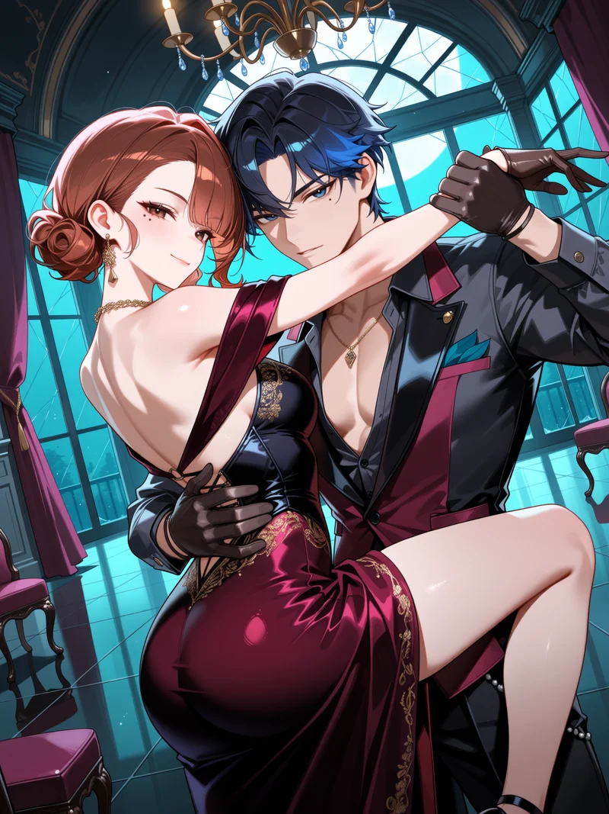
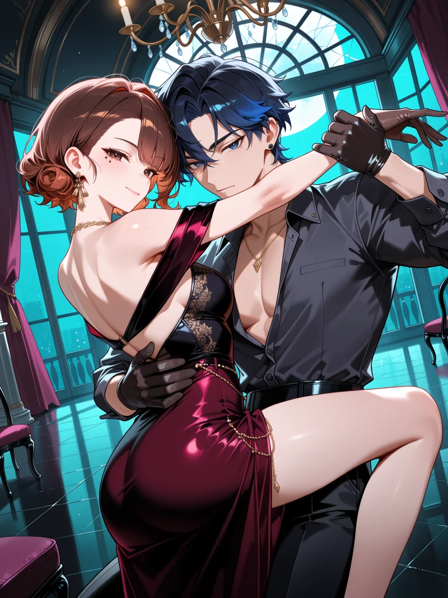

Local models on your RTX 3080
Everything here was generated on your own machine through ComfyUI: no cost, no content filter. Every row is the same nine characters with the same tags and the same seed: Rei, Emi, Mio, Aoi, Kaori, Goro, the guard, Jun and Yuzuki.


Your Civitai prompt, run locally
Your tango prompt with its seed and settings, through Nova Anime AM v5 (the Anima model it came from). 75 seconds including loading the model. Not pixel-identical to Civitai, because their site handles seeds slightly differently, but it is the same model and quality. Right: the same prompt and seed with the Anima RL add-on.